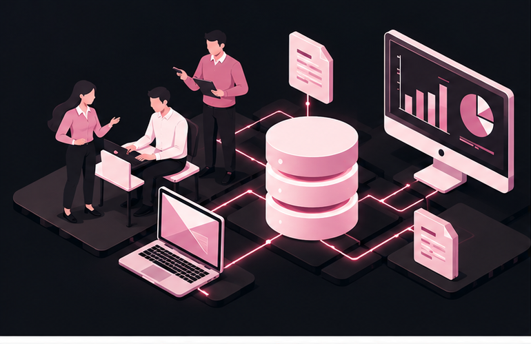

MIS & AI EthicsWebsite OverviewErica YiOctober 29, 2026 This site is about MIS, AI ethics, and cybersecurity. MIS stands for Management Information Systems, and it encompasses how people, technology, and processes work together to manage information. MIS matters because companies rely on it to make decisions and stay competitive. There are ethical and unethical ways to use AI in college, which are covered on the AI Usage page. The Security page covers malware, hackers, and how to stay protected. Visit the About Us page to learn more about who made this site and why. This website explores three connected topics: Management Information Systems (MIS), AI ethics, and cybersecurity. MIS describes how people, technology, and processes work together to collect, organize, and manage information within an organization. Businesses depend on MIS to make informed decisions and maintain a competitive edge. The AI Usage page examines the ethical and unethical ways students can use AI in college. The Security page explains common threats such as malware and hackers, along with practical ways to stay protected. Finally, the About Us page introduces the creator of this site and the purpose behind it.
|